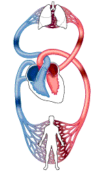
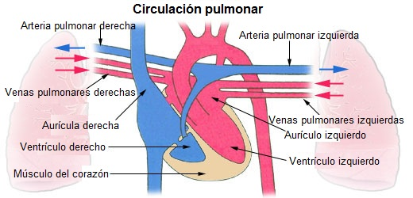
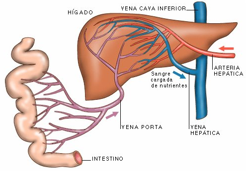
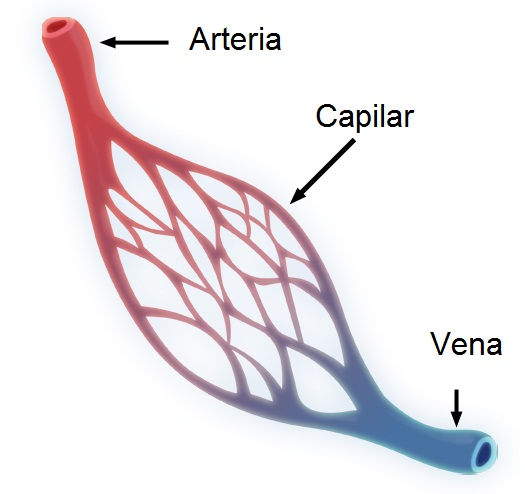

2.2. Fisiología de la circulación
Circulación de la sangre
La circulación sanguínea se caracteriza por ser doble, cerrada y completa.
Es doble porque pasa dos veces por el corazón, cerrada porque no se comunica con el exterior como en otros organismos, y completa porque la sangre arterial nunca se mezcla con la sangre venosa.
|  |
| Imagen en Agrega bajo licencia CC |
Para su estudio, la circulación sanguínea puede dividirse en:
- Circulación mayor o sistémica o general: es el recorrido que hace la sangre desde el ventrículo izquierdo hasta la aurícula derecha.
La sangre oxigenada en los pulmones llega al corazón (sangre arterial), y por la válvula aórtica abandona el ventrículo izquierdo para ingresar a la arteria aorta.
Esta gran arteria se bifurca en arterias de menor calibre, que a su vez se ramifican hasta formarse las arteriolas, que también se dividen dando origen a millones de capilares para entregar oxígeno y nutrientes a todas las células del organismo.
Las células eliminan dióxido de carbono y desechos del metabolismo, que pasan a los capilares venosos. La mayoría de los desechos son conducidos por las venas renales hacia el riñón para ser eliminados del cuerpo.
El dióxido de carbono es transportado por vénulas que arriban a venas de mayor calibre, hasta que toda la sangre desoxigenada es volcada a las venas cavas superior e inferior que la llevan hasta la aurícula derecha.
- Circulación menor o pulmonar o central: es el trayecto que realiza la sangre a partir del ventrículo derecho hasta llegar a la aurícula izquierda.
Desde el ventrículo derecho, la sangre venosa es impulsada hacia la arteria pulmonar, que la lleva directamente hacia los pulmones.
Al llegar a los alvéolos pulmonares se lleva a cabo el intercambio gaseoso (hematosis).
La sangre, ahora oxigenada, regresa por cuatro venas pulmonares (dos derechas y dos izquierdas) hacia la aurícula izquierda.
|  |
| Imagen de Arcadian en Wikimedia Commons bajo licencia CC |
Circulación portal hepática
Es una división de la circulación mayor.
Las venas originadas en los capilares del tracto digestivo desde el estómago hasta el recto que transportan los productos de la digestión, se transforman de nuevo en capilares en el hígado, para formar de nuevo venas que desembocan en la circulación sistémica a través de las venas suprahepáticas a la vena cava inferior.
|  |
| Imagen de sites bajo licencia CC |
Circulación capilar
Los capilares sanguíneos tienen como función principal intercambiar oxígeno y nutrientes celulares. Además reciben el dióxido de carbono y los desechos del metabolismo de las células.
El intercambio de sustancias se hace posible debido al reducido diámetro capilar (8-12 micras) y a la mínima velocidad que tiene la sangre en su interior. La regulación del flujo de sangre capilar está a cargo de la capa muscular de las arteriolas, mediante la reducción de su diámetro (vasoconstricción) o el aumento del mismo (vasodilatación).
|  |
| Imagen de CERT en Wikimedia Commons bajo Dominio Público |
El intercambio de gases, nutrientes y desechos se realiza por diferentes mecanismos. Uno de ellos es la difusión, donde el paso de sustancias se realiza desde un lugar de mayor concentración a otro de menor.
Otra forma de intercambio es la filtración, donde el paso se realiza debido a la presión intracapilar y al tamaño de los poros de sus paredes.
Pregunta de Elección Múltiple
Ampliación
Explicación sobre la regulación necesaria para mantener un flujo sanguíneo óptimo en los músculos esqueléticos durante el ejercicio físico.